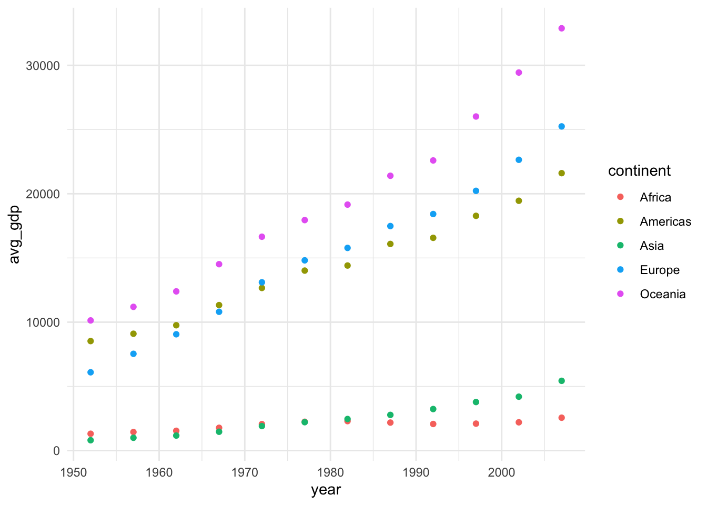
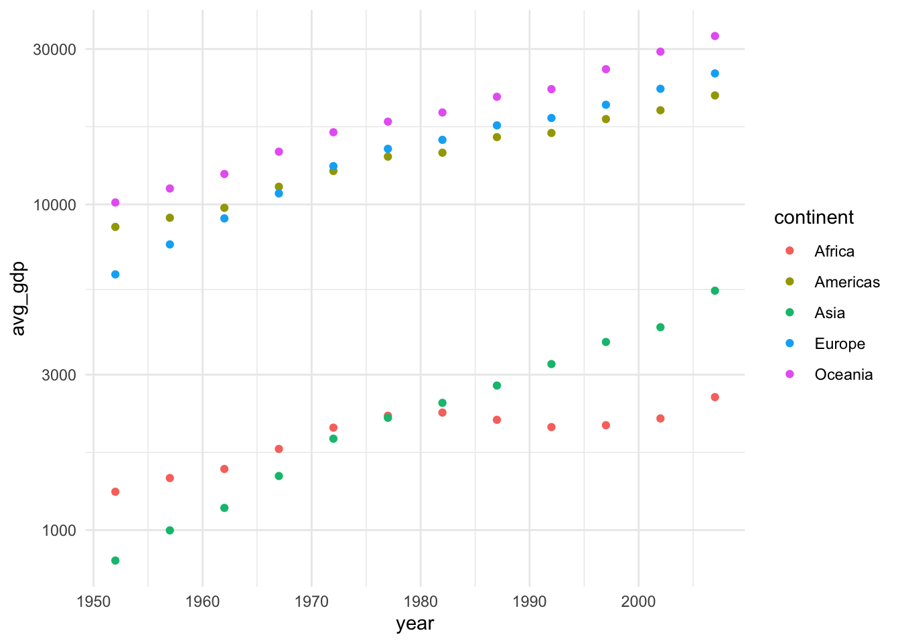

Code
library(tidyverse)
library(gapminder)library(tidyverse)
library(gapminder)gapminder_df <- gapminder %>% janitor::clean_names()gdp_df <- gapminder_df %>%
group_by(year, continent) %>%
summarize(avg_gdp = weighted.mean(gdp_percap, pop)) %>% # weight the gdps by country pop
ungroup()ggplot() +
geom_point(data = gdp_df, aes(x = year, y = avg_gdp, color = continent)) +
#geom_point(data = gapminder_df, aes(x = year, y = gdp_percap, color = continent), alpha = 0.2) +
theme_minimal()
ggplot() +
geom_point(data = gdp_df, aes(x = year, y = avg_gdp, color = continent)) +
scale_y_log10() +
theme_minimal()
m.1 <- lm(gdp_percap ~ continent + year, data = gapminder_df)
summary(m.1)
Call:
lm(formula = gdp_percap ~ continent + year, data = gapminder_df)
Residuals:
Min 1Q Median 3Q Max
-13594 -4113 -1183 1788 108541
Coefficients:
Estimate Std. Error t value Pr(>|t|)
(Intercept) -254715.28 23254.69 -10.953 <2e-16 ***
continentAmericas 4942.36 588.00 8.405 <2e-16 ***
continentAsia 5708.40 537.72 10.616 <2e-16 ***
continentEurope 12275.72 553.92 22.162 <2e-16 ***
continentOceania 16427.85 1740.93 9.436 <2e-16 ***
year 129.78 11.75 11.049 <2e-16 ***
---
Signif. codes: 0 '***' 0.001 '**' 0.01 '*' 0.05 '.' 0.1 ' ' 1
Residual standard error: 8369 on 1698 degrees of freedom
Multiple R-squared: 0.2813, Adjusted R-squared: 0.2791
F-statistic: 132.9 on 5 and 1698 DF, p-value: < 2.2e-16# multiple R2 = 0.28
m.2 <- lm(log10(gdp_percap) ~ continent + year, data = gapminder_df)
summary(m.2)
Call:
lm(formula = log10(gdp_percap) ~ continent + year, data = gapminder_df)
Residuals:
Min 1Q Median 3Q Max
-1.05622 -0.26858 -0.01782 0.22555 1.72979
Coefficients:
Estimate Std. Error t value Pr(>|t|)
(Intercept) -1.127e+01 1.067e+00 -10.56 <2e-16 ***
continentAmericas 5.937e-01 2.699e-02 22.00 <2e-16 ***
continentAsia 3.576e-01 2.468e-02 14.49 <2e-16 ***
continentEurope 9.103e-01 2.543e-02 35.80 <2e-16 ***
continentOceania 1.099e+00 7.992e-02 13.75 <2e-16 ***
year 7.285e-03 5.392e-04 13.51 <2e-16 ***
---
Signif. codes: 0 '***' 0.001 '**' 0.01 '*' 0.05 '.' 0.1 ' ' 1
Residual standard error: 0.3842 on 1698 degrees of freedom
Multiple R-squared: 0.4935, Adjusted R-squared: 0.492
F-statistic: 330.9 on 5 and 1698 DF, p-value: < 2.2e-16# multiple R2 = 0.49
# choosing model with log-transformed gdpGDP per capita tends to increase over time across all continents, and the GDP for Europe, Oceana, and the Americas is consistently higher than the GDP for Africa and Asia over this time period. I chose the log-transformed model because it explained more of the variation in my data (R2 of 0.49 compared to 0.28 on the initial model).
All coefficients in my model were statistically significant. The “reference” continent in my model is Africa. Each coefficient value represents, for each other continent, what the difference in log10(GDP) is between Africa and that continent. The “year” coefficient represents the increase in log10(GDP) per year, holding other factors constant.
For most continents, a linear model seems to visually fit the data well. For others, such as Africa, the data do not seem to follow a linear relationship. There might be other factors at play that could warrant the use of more complex models than linear regression.